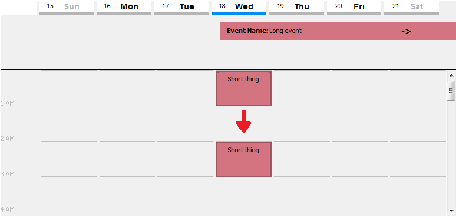

Summary
In week view, you can view your scheduled events and commitments in hourly blocks as with day view, but seven days at a time. You can also
rearrange your events and commitments.
Navigating Through the Week Calendar View
Week view has a Forward, Back, and Today button.

By clicking the left and right arrows (Back and Forward), the displayed week can be changed. The Today button displays the
current day and date of the week.
In week view, commitments and events that have been scheduled for certain dates are shown as blocks highlighted with the color of the category chosen
for them. Multi-day events are shown as banners along the top of the panel. These banners span the days that the event will take place over.
Details about them can be found in a tooltip, which will be revealed on mouse-over.
To jump to a specific day from the week view, double click on the day and it will open the day in the day view tab.

The current day and date of the week is highlighted in blue.
Rearranging Events and Commitments
You can easily rearrange your event and commitments by dragging them to a new position on the calendar and dropping them. Simply click and
hold on the event's block, and release the mouse button after moving it to its new time.
